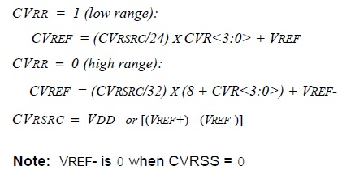

| Summary: | The CVREF voltage reference has 2 ranges (high and low) with 16 or 32 voltage levels in each range. The range is controlled by the Range Selecion drop-down box. |
| Description: | The CVREF Level has 16 or 32 levels (depending on the device), the selection of the desired level is done by clicking on the Up/Down arrown next to the CVREF level text box, or by entering the value directly in the box. Another method is to modify the CVR bits of the CVRCON register, from Register View. Modifying the CVREF Level also modifies the CVREF Output (see the output calculation equations below). |
| Availability: | The CVREF Level option is always available. |
| Summary: | The comparator reference supply voltage can come from either VDD and VSS, or the external VREF+ and VREF-. |
| Description: | The voltage step is calculated by deviding the CVRsrc to the step size, which depends on the range (high or low). The Vref- and Vref+ boxes are available when selecting as a Voltage Source (Vref+)-(Vref-), on the device that have the Voltage Source dropdown box. |
| Availability: | The Voltage Step Size label is always available. |
| Summary: | The CVREF output voltage is determined by an equations depending on the Range Selecion (CVRR bit of CVRCON). |
| Description: | When the range is modified from the Range Selecion drop-down box, the CVREF Output minimum and maximum values also modify. If the value does not meet the required interval, the CVREF Output will warn you about it by colouring the box red, in this case you will either have to change the output value, the range or the level. |
| Availability: | The CVREF Output Value is always available. |
|  |